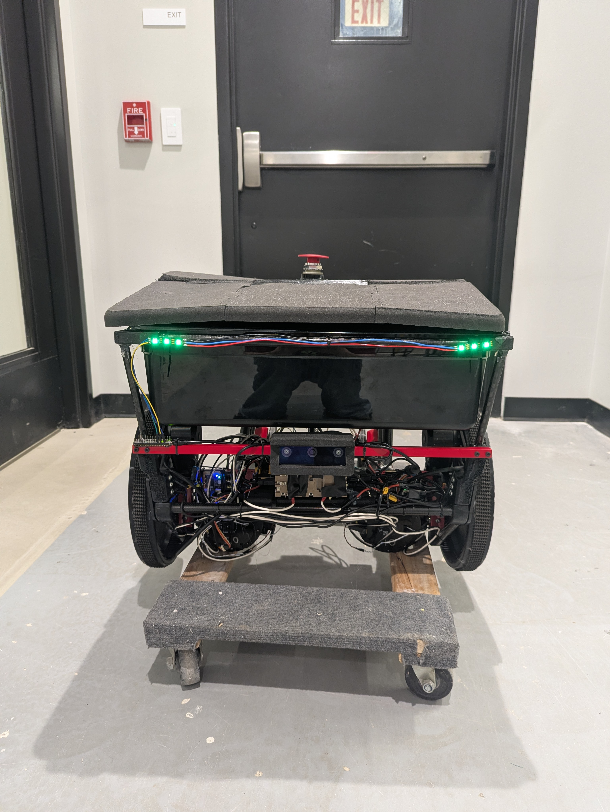

CMU Capstone 2026
Team BoWL is an autonomous legged-wheeled robot that follows students across campus, carrying their belongings so they don't have to.

At a Glance
Project Sections
Each section mirrors a chapter of the engineering report. Click through for the full detail.
Demo
System Validation Review footage.
Autonomous Following
User tracking + obstacle avoidanceTerrain Traversal
Cracked floors & elevator thresholdTeam